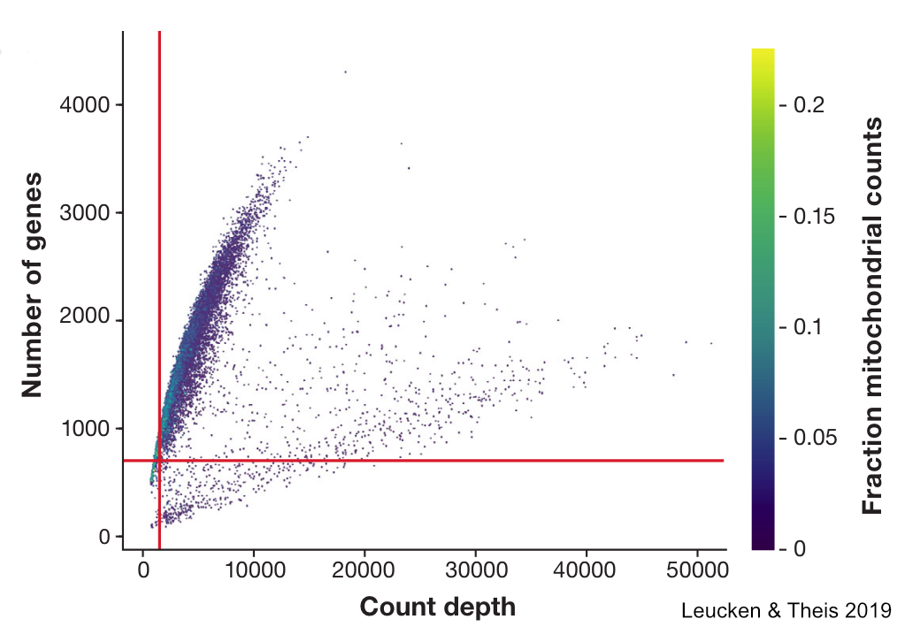
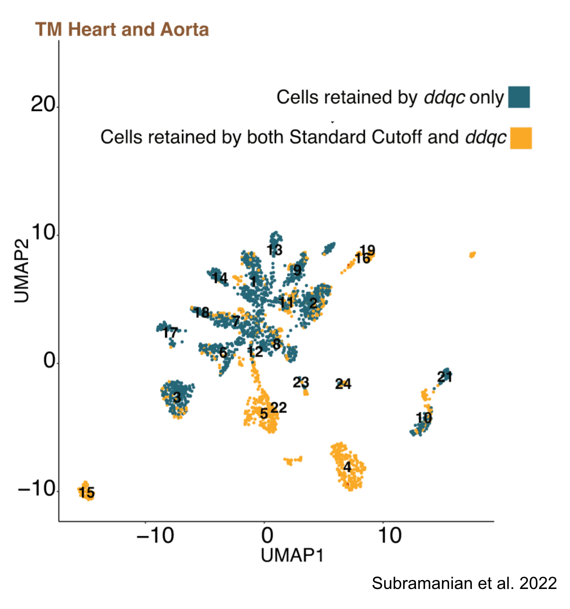
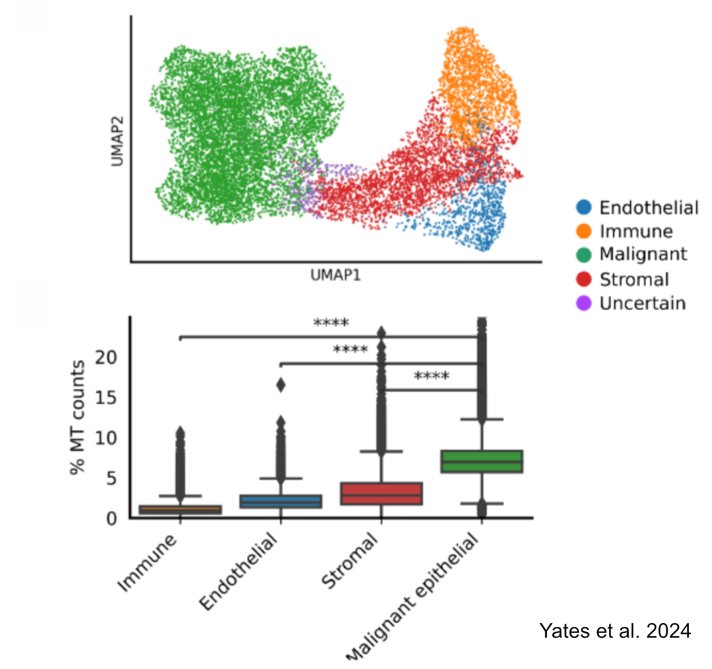

Single Cell RNA Sequence Data: Quality Control
What is single cell RNA sequencing?
- Associate mRNA with cell of origin
- Which genes are transcribed in a single cell
- How much of a gene is transcribed in a single cell
What scRNA can tell us?
- Identify new cell types
- Investigate developmental trajectories
- Understand the basis of tumor progression
- Characterize immune cell types
- Piece together gene regulatory networks
- And more
How to obtain scRNA?
- Dissociate cells
- Isolate single cells
- Construct libraries from mRNA
- Sequence libraries
Dissociate Cells
Isolate Single Cells
Construct Libraries
Sequence Libraries
How to obtain scRNA?
- Dissociate cells
- Isolate single cells
- Construct libraries from mRNA
- Sequence libraries
The Data
Challenges
- Data are very noisy
- Prone to technical artifacts
Quality Control
Three primary components:
- Number of counts per putative cell
- Reads
- Unique molecular identifiers (UMIs)
- In reality may represent 0 cells or more than 1
- Number genes per putative cell
- Proportion of mitochondrial genes in putative cell
Why you should filter cells with high mtDNA expression?

Why you should not filter cells with high mtDNA expression?
Cells can have high mtDNA expression for several other reasons:
- Larger cells
- High metabolic rate
- Kidneys, muscles
- Malignant cells
How to filter
High Metabolic Activity
Additional Resources
Malignant Cells
Additional Resources
miQC
- Models cell quality base on counts and proportion of mtDNA
- Estimates probabiliy for cell that can be used for filtering
Additional Resources
ddqc
- Tool facilitating the application of thresholds to clustered cells
- Iteratively cluster cells and apply thresholds to each cluster
- Requires UMIs
Additional Resources
Alternative to proportion mtDNA
- MALAT1
- Intact cells have moderate to high levels MALAT1
- Not consistent across cell types
Additional Resources
MALAT1 expression indicates cell quality in single-cell RNA sequencing data - Clark & Bader 2024
Recommendations
- QC should be iterative
- Start with minimal filtering
- Do not select thresholds because they improve outcomes of statistical tests
- Thre must be some other justification
- Beware the garden of forking paths
- Be transparent
- Data driven approaches seem better than simple threshold based approaches in many applications
- Additional evidence beyond mtDNA can be helpful